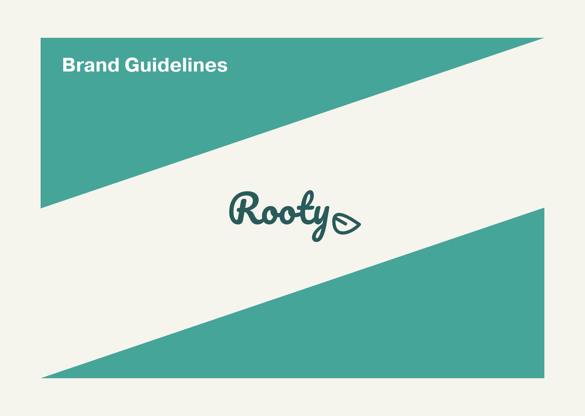
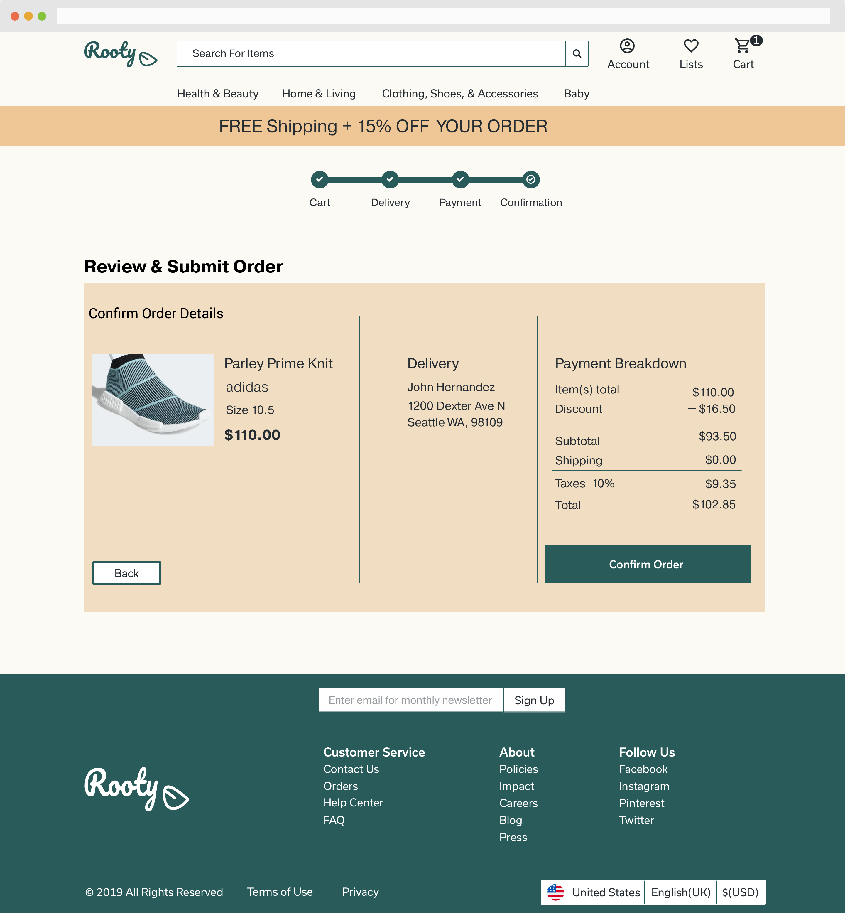
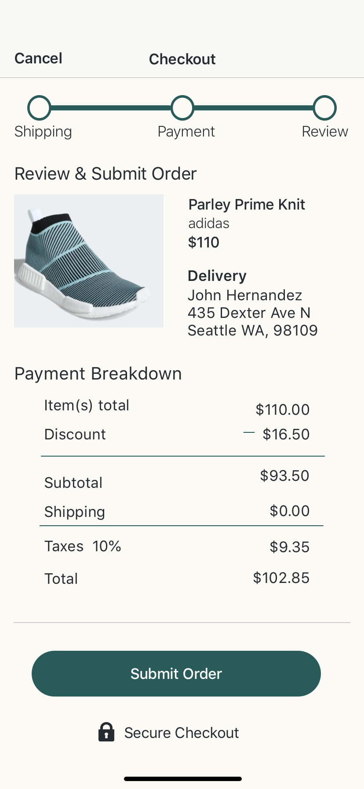

Over the course of my internship, I worked on designing an augmented reality(AR) social experience IOS app. What does social experience mean? The best way to describe this app is by comparing it to Airbnb Experiences. Airbnb Experiences provides local guided experiences to travelers all around the world. This client project utilized augmented reality to engage the users through guided experiences. The user can discover adventures, create experiences for others, and adventure together with friends.
Roles
UX Design
UX Documentation
Engineer Collaborator
Team
Global Engineering Team
Business Stakeholders
Design Agency CEO
Creative Director
- Users need an engaging user experience when utilizing AR mode.
- User tasks are too complex and need to be broken down into simple user experiences.
The Design Process
For this project, the team had already conducted research prior to me joining. I was able to better understand who our users are and the use cases for the app based on the documentation & research data. The team had already created a customer journey map and storyboard for the user journey.
I referenced my research & flows when sketching the checkout process. For instance, including the guest button as an option during checkout was tested here. We found that 25% of users prefer guest checkout which means we want to retain those users for higher customer acquisition. We also learned that users use a sort by filter when reviewing search results.
The Sketches helped with thinking about what the different user tasks looked like on a screen. The sketches were then translated into a clickable wireframe for testing. The wireframes included a more thought out category selection for users in the top navigation bar. It also included a product page that utilized more of the space on the page. Overall, the wireframes had much more information than the sketches which helped with making it feel like a real online marketplace.
There were 16 user testers. We asked the users to search for a product, sort by search results, view product details page, add products to cart, and complete the checkout process. The users were able to finish all task successfully but had a difficult time with the search bar & entering credit card information during checkout. This was a prototype process issue that needed to be improved for the high fidelity mockups.
Before jumping into high fidelity mockups we worked on the branding and visual design. When thinking about branding it was important to have a name that is related to the word Earth and environment but still was fun and pleasant to think about.
Logo was created based on earthy inspiration. The name Rooty was developed after brainstorming names that gave meaning to eco-friendly shopping. It stemmed from the word root and we experimented with roots as a symbol as well as leafs because they grew from the ground.
The color palette was chosen based off of leaf green as the primary color and yellow brown as the secondary color. The colors relate to the brand theme of being environmentally friendly and relating to earth. The color green and the color yellow-brown are colors that create a nature loving tone.
Mockups were designed based on user feedback from wireframe testing & style guide branding. We made updates on the search and checkout process. We also had different variations for home page layout and product details screens.There were 25 users who participated in preference testing.
89% of users found the green homepage layout more accessible.

86% found the white background for dropdown menus more accessible.
19 users were tested using maze testing & there were 2 in-person testers. The usability score this time was much higher on maze! We got an 81 which is better than 31 from the wireframe testing. All users completed the tasks smoothly and successfully. The feedback was positive and the users related to the brand being earthy with the logo and branding of the site.
Users loved the prototype. Feedback from users included the following comments.
"Seems very easy to use and love the colors you're using!"
"Nice job - no issues completing any of the mazes :)"
"Looking good! Checkout process was easy and what I'm used to"
"Very clean, easy to use, follows the e-commerce platform I see pretty consistently across many product pages."
"For the dropdown filter, probably add "price" to high to low and change "relevancy" to “relevance"
"Pretty straightforward"
After user testing was complete iterations were made to the prototype. The free shipping deal was highlighted to show users there is a sale. Thumbnail images were made bigger for more visibility & the brand colors were highlighted and used more on the landing page. The text errors were fixed and the page headings for “Top Rated”, “Under 25”, & “About Us” were brought into the green box to avoid eyes from bouncing around the page.
From research I found the search feature to be important for users.
Users always sort their search results.
Guest Checkout options help keep customers on website.
Upload files and access them on any device wherever you go.
From research I found the search feature to be important for users.
Users always sort their search results.
Guest Checkout options help keep customers on website.
Upload files and access them on any device wherever you go.
Rooty is an easy to use e-commerce website for green products. Today on the market there is no website dedicated to providing top quality products that are eco-friendly to customers. Users have to go out of their way to discover products. This is not only a good business opportunity but also a design that focuses on pre-existing checkout process standards and search features to build a solid user experience. It was surprising to see websites like Wonderful Things not focusing in on the search feature. I found that users will use the search bar more often than not. If I had more time I would build out a better and more robust search function for this website. This project overall was exciting because the environment is something I feel really passionate about and I am always looking for ways to take part in caring for it.